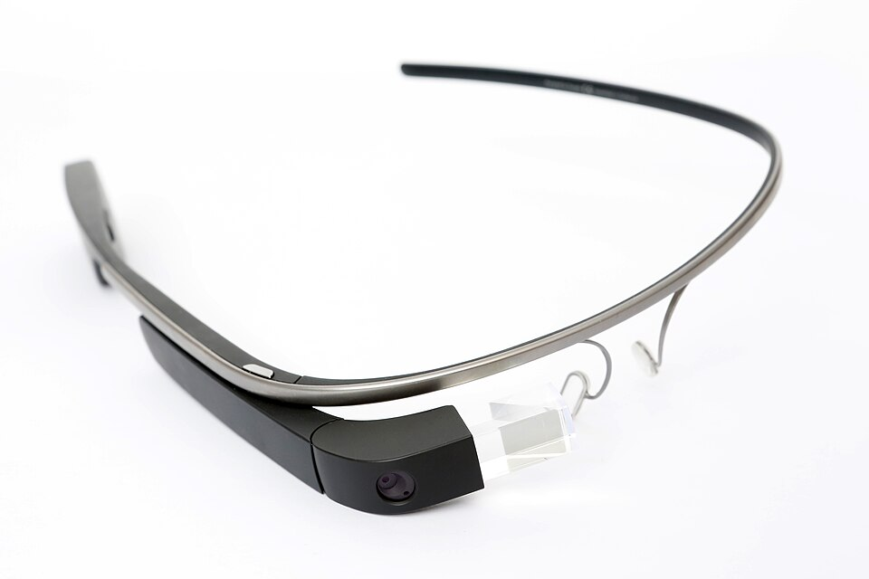

分镜与素材 / 粗剪审阅
按逐字稿粗剪
剪辑 v4 · 本机
原片逐字稿
演示主机位.mov · 源时间拿起眼镜前，先看这个位置。
保留开场说明
先看镜腿朝……我重说一遍。
重说候选 · 下一句是完整表述
先看清镜腿的方向，再拿起眼镜。
保留这一遍 · 可单独更正字幕
接下来，请看完整的手部动作。
已保护 · 保留动作、等待及同期声
拟剪掉原片 00:17–00:21，声画与对应字幕一起移除。
采用前可对照原片范围，已保护的 7 秒保持连续。
来源画面
构图占位 · 方案示意
演示主机位.mov 00:21.000
本段缺少清晰可读的型号标签。拍一段标签特写后绑定到片尾。
成片时间线
当前 42 秒 · 采用后 38 秒声画
字幕
黄色为待决定的重说，绿色为已锁定的连续动作。原片保留全部内容。